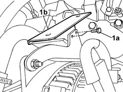
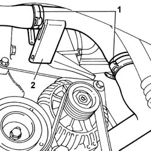
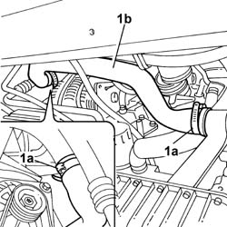

1088D22 WATER PUMP INLET CONNECTOR - R.R.
- Path
- Procedures > 10 ENGINE UNIT > 1088 ENGINE COOLING > 1088D COOLANT HOSES AND SLEEVES > 1088D22 WATER PUMP INLET CONNECTOR - R.R.
- Kind
- repair procedure (removal / refitting; the operation number is the code)
- Applies to
- engines: 2.0 16V; all production periods
- Interactive page
- https://sloeber94.github.io/elrnDB-fDct/en/#/244000967
Applies to: engines: 2.0 16V; all production periods
 Removing
Removing
 Refitting
RefittingOp. 4450B04 RIGHT FRONT WHEEL R R
Op. 5530A50 ALTERNATOR GUARD - R & R.
- Position a suitable container for collecting the coolant.
1. Undo the alternator bracket (1b) fixing bolts (1a).

Applies to: engines: 2.0 16V; all production periods
Op. 7055B54 UNDER-ENGINE GUARD - R R
1. Open the retaining bands and release the coolant pipes.
2. Release the rigid coolant pipe and remove it.

Applies to: engines: 2.0 16V; all production periods
- If the flexible hose needs replacing.
1. Open the retaining bands (1a) and release the coolant pipe (1b).

Applies to: engines: 2.0 16V; all production periods
Refitting
Removing- Place the rigid pipe complete with flexible hose in position and restore the hose retaining bands.
- Tighten the alternator bracket fixing bolts.
Op. 7055B54 UNDER-ENGINE GUARD - R R
Op. 4450B04 RIGHT FRONT WHEEL R R